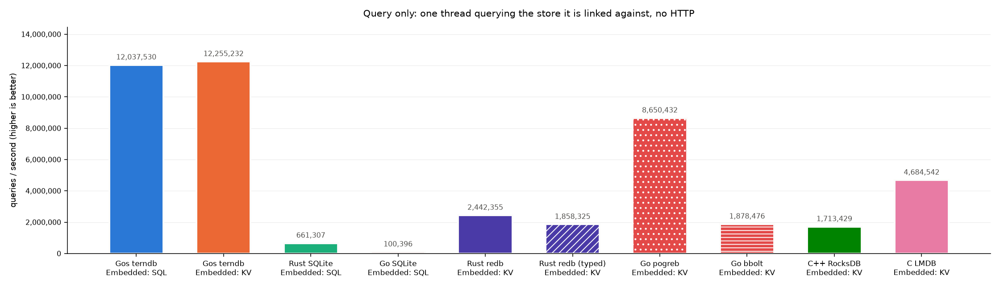
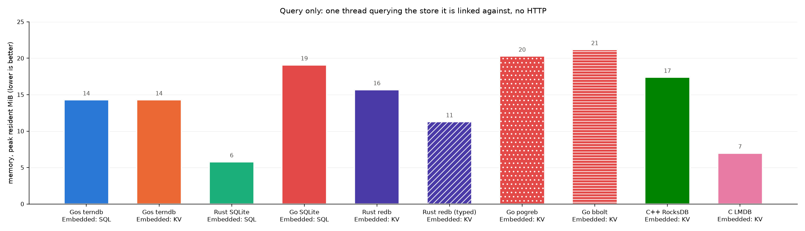

Over HTTP: 50,000 rows, 8 concurrent workers, 5s measured per target. In process: 50,000 rows, one thread, 5s measured per target. On 24 cores (Linux 7.0.0-31-generic).
The HTTP charts report the three numbers a deployment is chosen on - response rate, CPU per request and peak memory. A Go client drives concurrent GETs at a web server, and the store runs in that server's own process. The query-only charts have no HTTP in them at all - one thread calling the store it is linked against - so they report queries per second and the memory the store costs to run. Every bar in a chart answered the same request against the same seeded dataset. A variant - the `gos run` tier, or redb holding typed columns - is hatched and shares its path's colour.




| target | response rate, req/s | CPU, us/req | memory, peak MiB |
|---|---|---|---|
| C LMDB Embedded: KV (c-lmdb-embedded-kv) | 504,673 | 6.7 | 8.4 |
| Gos terndb Embedded: KV (gos-terndb-embedded-kv) | 498,626 | 7.1 | 15.3 |
| Gos terndb Embedded: SQL (gos-terndb-embedded-sql) | 489,651 | 7.2 | 14.0 |
| C++ RocksDB Embedded: KV (cpp-rocksdb-embedded-kv) | 426,081 | 8.6 | 18.5 |
| Rust redb Embedded: KV (rust-redb-embedded-kv) | 414,695 | 6.4 | 17.7 |
| Rust SQLite Embedded: SQL (rust-sqlite-embedded-sql) | 244,807 | 20.4 | 59.3 |
| Go pogreb Embedded: KV (go-pogreb-embedded-kv) | 237,332 | 21.7 | 23.5 |
| Go bbolt Embedded: KV (go-bbolt-embedded-kv) | 185,957 | 26.8 | 28.0 |
| Gos terndb (gos run) Embedded: KV (gos-terndb-embedded-kv-gos-run) | 170,301 | 33.2 | 172.6 |
| Gos terndb (gos run) Embedded: SQL (gos-terndb-embedded-sql-gos-run) | 163,063 | 34.3 | 174.6 |
| Go SQLite Embedded: SQL (go-sqlite-embedded-sql) | 112,643 | 35.7 | 54.1 |
| Python SQLite Embedded: SQL (python-sqlite-embedded-sql) | 10,461 | 130.4 | 163.9 |
| target | queries/s | memory, peak MiB |
|---|---|---|
| Gos terndb Embedded: KV (gos-terndb-embedded-kv) | 12,255,232 | 14.3 |
| Gos terndb Embedded: SQL (gos-terndb-embedded-sql) | 12,037,530 | 14.3 |
| Go pogreb Embedded: KV (go-pogreb-embedded-kv) | 8,650,432 | 20.3 |
| C LMDB Embedded: KV (c-lmdb-embedded-kv) | 4,684,542 | 7.0 |
| Rust redb Embedded: KV (rust-redb-embedded-kv) | 2,442,355 | 15.7 |
| Go bbolt Embedded: KV (go-bbolt-embedded-kv) | 1,878,476 | 21.2 |
| Rust redb (typed) Embedded: KV (rust-redb-embedded-kv-typed) | 1,858,325 | 11.3 |
| C++ RocksDB Embedded: KV (cpp-rocksdb-embedded-kv) | 1,713,429 | 17.4 |
| Rust SQLite Embedded: SQL (rust-sqlite-embedded-sql) | 661,307 | 5.8 |
| Go SQLite Embedded: SQL (go-sqlite-embedded-sql) | 100,396 | 19.1 |